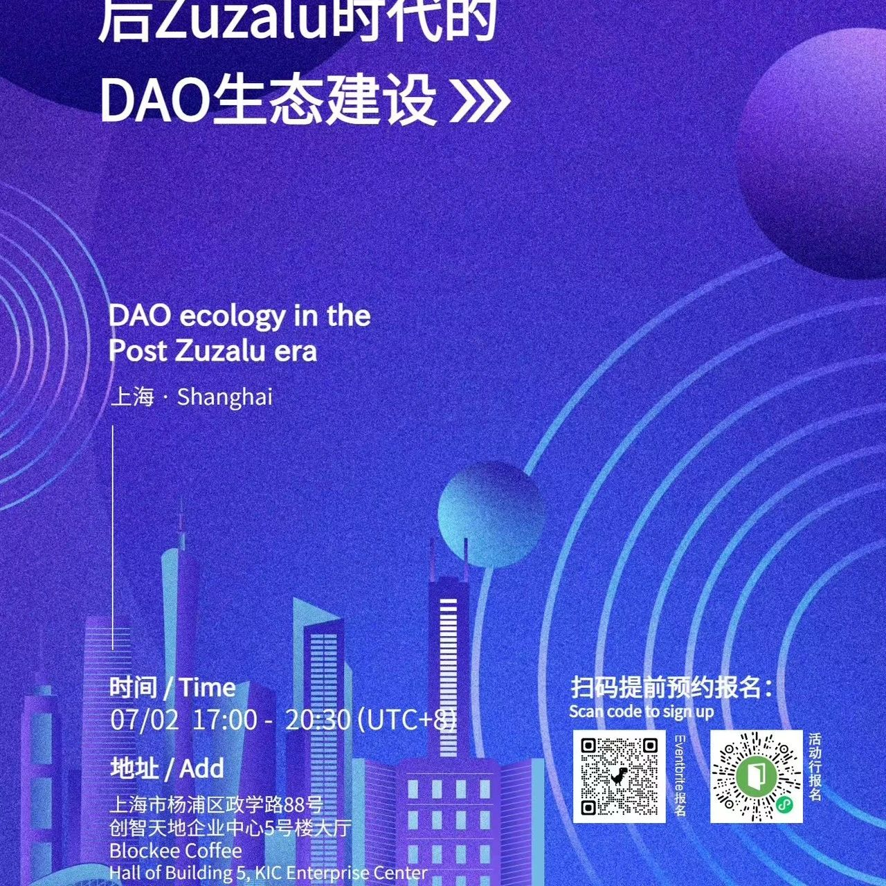

SeeDAO上海｜后 Zuzalu 世代的 DAO 生态建设
🔔关于“后Zuzalu 世代的DAO生态建设”的探讨会将在本周日（7月2日）傍晚在上海举行。
😊我们有幸联合 DeepDAO 、zCloak 主办这场令人期待的线下活动。
🎊这次活动邀请了业内的六位重量级嘉宾：
唐晗，SeeDAO 发起人
丹尼尔，DeepDAO 创始顾问，比特未来 - 区块链资本创始人
Annabella，zCloak Network CMO
刘怿斯，Mask Network 联合创始人 & CTO
李永峰，OpenSquareNetwork 创始人
孙哲，社会学学者，comupage发起人
📚目前暂定3⃣️场主题讲演和2⃣️场圆桌对谈。
🕸️从网络国家聊到DAO 治理的SBT，再到 Web3 的生活样貌，我们将帮助你层层揭开 Web3 DAO 的神秘面纱🎭
💬此次活动将是与业内领袖交流的绝佳机会，我们还准备了丰富的冷餐小食和专属POAP。不要错过这个学习和交流的机会！
期待你准时参加！周日见！[转圈]
